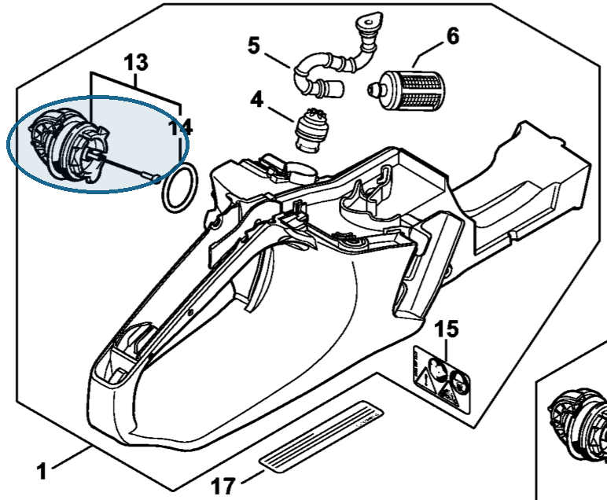

Filler cap
0000 350 0532
MS 261 — fuel tank
Fuel filler cap; includes seal (item 14).
Item 13 Qty listed: 1

MS 261 C-M spare-parts list, 10/02/2023. Drawing p. 21; parts table p. 22.
Suggest a correctionGitHub · sign-in required
0000 350 0532
Fuel filler cap; includes seal (item 14).
Item 13 Qty listed: 1

MS 261 C-M spare-parts list, 10/02/2023. Drawing p. 21; parts table p. 22.
Suggest a correctionGitHub · sign-in required